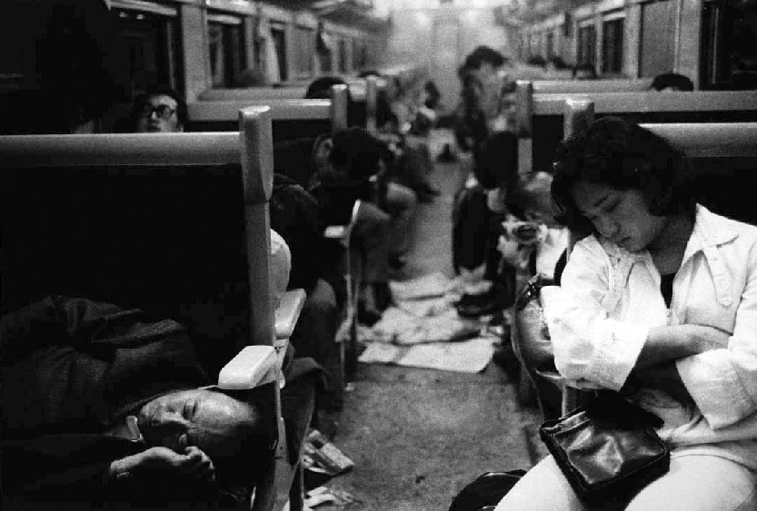

Hey thanks to visiting my page! I'm Ricardo from Brazil. I grew up mostly in Europe and am based in Japan. One of my biggest passions is Photography, so I dedicate this page to quick talk about my 3 favorite photographers.
Check also out my photography website : ) Enjoy!
Sebastião SalgadoBrazilian documentary photographer. He traveled in 120 countries for his projects, and made exhibitions throughout the world. His works are all taking from a film Leica camera, meaning NO PHOTOSHOP or filer. You see a photographer's talent in its purety. |
|
Helmut NewtonGerman-Australian fashion photographer. He pioneered "provocative" fashion photography, and still is the source of inspiration for many commercial photographers. He is a master in black and white photography, and genius in composition. See it yourself! |
|
Daidō MoriyamaJapan pioneered abstract photography in the 60s (totally messy, maybe blurry, but cool photos). Other than Araki, Moriyama is the most notable photographer of this genre, noted for his depiction the breakdown of traditional values in post-war Japan. Google him, and you'll see countrless great photos that will fit well as Grunge album covers. |